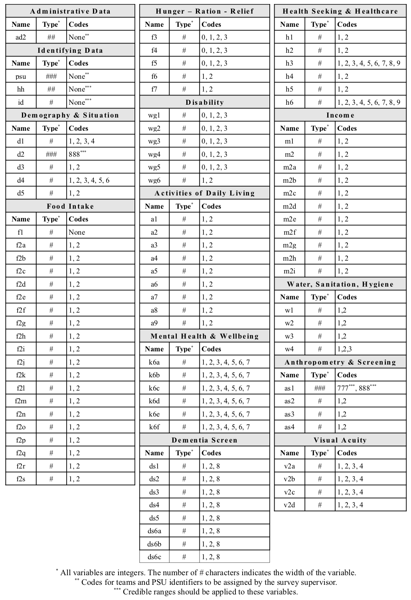
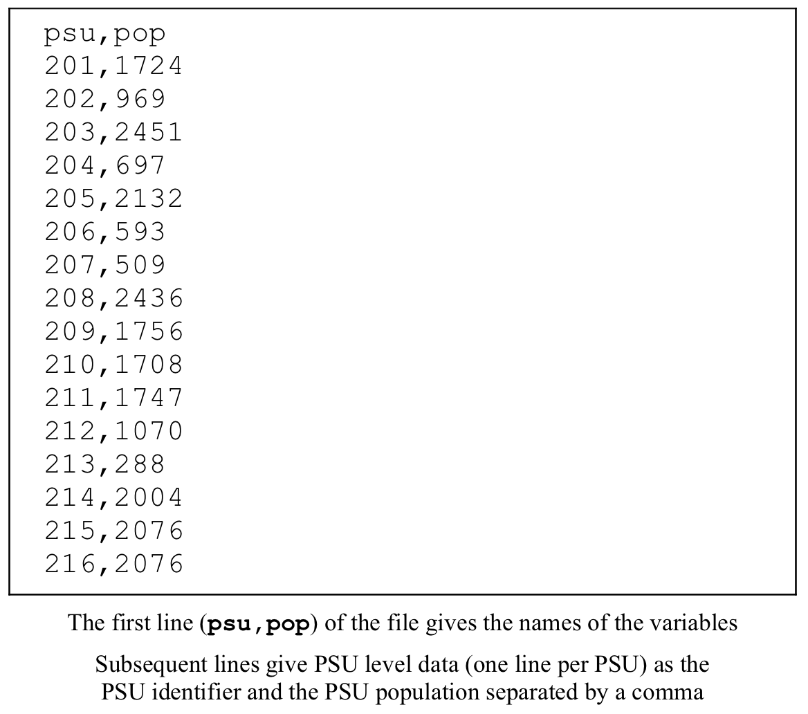

4 Datasets
This section details the RAM-OP datasets. The information presented here is of most use if you decide not to use the RAM-OP data entry and data checking software. You might, for example, decide to enter survey data using spreadsheet software such as Microsoft Excel. If you do this and want to use the RAM-OP data analysis software then you will need to export the data as a comma-separated-value (CSV) file with the same variable names, variable types and lengths, and using the same codes as shown in the tables in this section. For the main RAM-OP survey dataset these are the same variable names, variable types, variable lengths, codes, and in the same order as shown on the standard RAM-OP questionnaire.
There are two RAM-OP datasets:
The main RAM-OP survey dataset : This is the data collected by the survey questionnaire. The dataset definition for the main RAM-OP dataset is shown in Figure @ref(fig:dataset01).
The PSU dataset : This a short and narrow file with one record per PSU and just two variables:
| psu | The PSU identifier. This must use the same coding system used to identify PSUs that is used in the main RAM-OP dataset. |
| pop | The population of the PSU. |
The PSU dataset is used during data-analysis to weight data by PSU population.
If you do not know population sizes (as might be the case in emergencies) then you can collect this data:
When you visit the PSU (i.e. from community leaders or health centres).
When you visit the PSU as a doorway count or roof count.
Using recent satellite imagery as a roof count.
Relative population sizes can be used. If no better data is available then it is reasonable to use a simple semi-quantitative assessment such as:
| Type of place | Population range* | Features | Record population as … |
|---|---|---|---|
| Hamlet | \(<\) 1,000 | Very small local market or no market | 1 |
| Village | 1,000 – 4,000 | Market and small shops serving the village and the surrounding hamlets | 2 |
| Town | \(>\) 4,000 | Large market, many shops (some specialised), guest houses, bus station, government offices | 4 |
*These ranges may need to be adjusted to match local circumstances.
The PSU dataset must be in comma-separated-value (CSV) format (see Figure @ref(fig:dataset02)) for use with the RAM-OP data analysis software.
The RAM-OP data analysis requires that the main RAM-OP survey dataset is supplied in either an EpiInfo v6.xx or EpiData (REC) format or in a comma-separated-value (CSV) format file The RAM-OP data analysis requires that the PSU dataset is supplied in a comma-separated-value (.CSV) format file. Figure @ref(fig:dataset02) shows an example of a PSU dataset in comma-separate-value (CSV) format.

Note that the first line of a CSV format file gives the names of the variables (e.g. these are psu and pop for the PSU dataset) separated by commas. Subsequent lines contain data with items separated by commas and with one record per line. CSV format files can be created using a plain text editor (e.g. Notepad) or with a spreadsheet application such as Microsoft Excel™. If you use a spreadsheet application then you will have to be careful:
Variable names and data items must be separated by commas (not tab characters or semi-colon characters).
Numbers with decimal places must use the full-stop character as the decimal separator. In some settings a spreadsheet application may want to use the comma character as the decimal separator.
Avoid using accented characters in the names of and in the data entered into text variables. These characters can sometimes confuse the RAM-OP data analysis software. A CSV file should contain only plain text, number, and commas without formatting. Do not use a word processor application such as Microsoft Word™ to create or edit a CSV file.
If you have problems using a CSV file then you should check and edit the file using a plain text-editor such as Notepad or a dedicated CSV editor such as Ron’s Editor (http://www.ronsplace.eu/Products/RonsEditor)
Remember to backup your data before editing it.